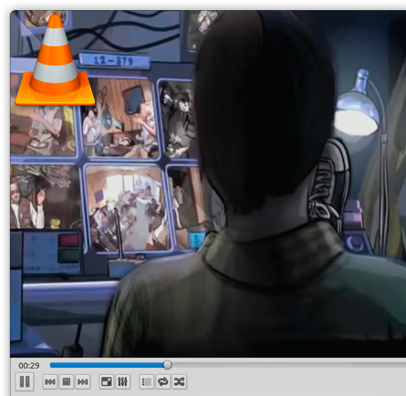

<div class="header"><h1 class="title">Get Entertained</h1></div>
<a href="http://www.mauilinux.org/" target="_blank"></a>

<div class="main">

    <div class="content">
	<ul>
	    <li>Maui is ready to play videos and music from CDs, DVDs and the web.</li>
	    <li>It comes with all necessary codecs and multimedia applications on board.</li>
	    <li><em>VLC</em> allows watching videos from your computer, while <em>Handbrake</em> converts them to the format you need.</li>
	</ul>
    </div>

</div>

